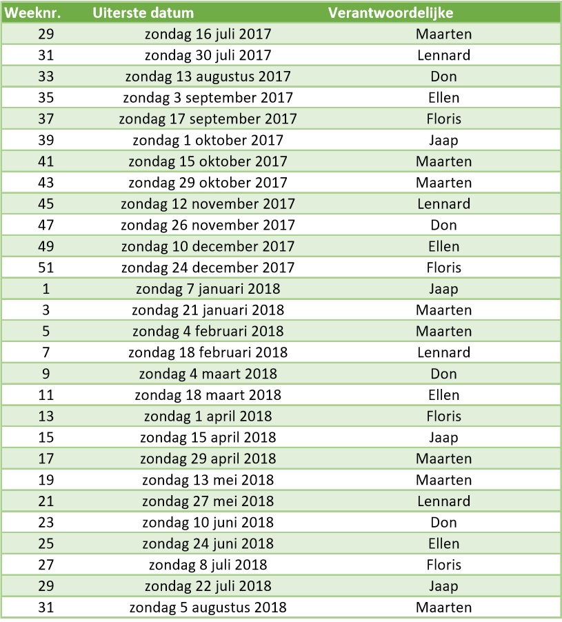

Het complete rooster wordt hieronder weergegeven. Schoonmaken van DSP bestaat uit de volgende activiteiten: vegen, dweilen/schrobben, spinnenwebben weghalen, alles afnemen (vensterbanken, gokkast, bovenkant v koelkasten, balken, banken, etc.), wc schoonmaken, koelkasten schoonmaken, onder de bar opruimen.

De data weergegeven op het schoonmaakrooster zijn bindend. Een verantwoordelijke dient zelf vervanging te regelen wanneer hij / zij niet in staat is om voor een bepaalde datum het schoonmaakwerk uit te voeren.
Volg ons